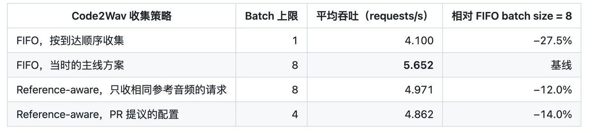
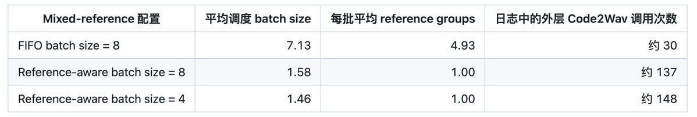
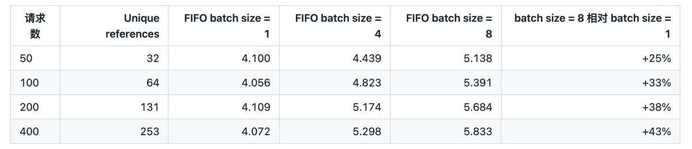
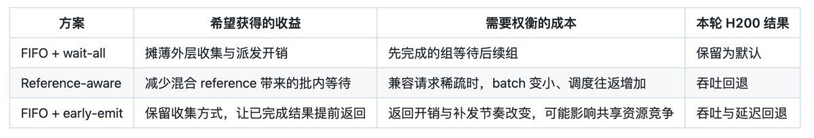

语音模型的serving性能，很容易被host上的噪声左右。这篇文章记录了一次围绕Code2Wav batch size的复测：为什么同一个参数，社区同学在A800上看到退步，而在H200上却测出近四成提升。
真正有价值的不是那个最终参数，而是把一个看起来很小的配置问题，拆成可以逐项验证的控制变量实验的全过程。
在《重新审视CPU资源作为语音模型Serving过程的一等公民》一文中，我们讨论过一个颇为尴尬的问题：同一个commit的吞吐可以随着主机争用大幅变化，如果连测试环境都没有控制好，所谓的优化可能只是恰好赶上了机器比较空闲。看上去是CPU资源的争用问题，其实更本质的思考在于，如何为我们的性能验证提供一个严谨的单一变量实验环境。同一个commit的性能可能受到CPU可用资源和争用程度这些难以察觉的变量的影响，更何况是各类模型serving的参数这些显性的变量呢？
https://github.com/zhaochenyang20/Awesome-ML-SYS-Tutorial/blob/main/sglang/sglang-omni/cpu-first-class-citizen-zh.md
这几天，我们围绕MiniCPM-o 4.5模型的Code2Wav batching再次开展了一些改动不大，但是颇有意思的性能优化。简单来说，我们尝试对Code2Wav的batching参数进行搜索。逻辑上，既然我们已经不主动等待凑batch，把batch size上限从1提高到8，难道性能还会变差？社区同学在A800上观察到了这样的现象，而我在H200上的验证却得到相反的结果：

这组结果来自单张H200、SeedTTS完整EN数据源的前200条请求、并发16、零主动等待，每个mixed-reference配置重复三次；每次启动服务后另做50条预热并剔除，CPU绑定与争用检测条件也保持一致，完整实验记录可参考此处。
https://github.com/sgl-project/sglang-omni/pull/2271#issuecomment-5751596133
最初，我很有把握地认为，不等待凑batch（max_batch_wait_ms=0），更大的batch（max_batch_size=8）应该有收益；随着问题的深入，我们发现的trade off自然不止于此。因此，我们想借这篇短文，分享我们如何把一个看起来很小的参数问题，拆成可以逐项验证的控制变量科学实验，并且引出我们的一些思考。
1 区分并发数、调度batch与模型内部的计算batch，理解这次争论从何而来。
2 通过三组实验，分别验证收集策略、batch上限和计算结果的返回时机对性能的影响。
感谢朱时昊、孙哥、Charlie，以及参与PR review、复测和机制讨论的各位朋友。这篇文章沿用当时的实验记录，其中还有没有解释透彻的地方，也欢迎大家继续提出意见。
正如广为人知的那样，Batching把多条请求组织到一次处理过程中，让它们有机会共享固定开销和计算资源。对熟悉LLM serving的朋友来说，这个动机并不陌生：逐条处理需要反复派发工作，而合批之后，一次模型调用可以推进多条请求。不过，“组织到一次处理过程”可以发生在不同层次，仅仅看到配置里写着Batch size = 8，完全不足以知道GPU实际做了怎样的计算。
在SGLang Omni的benchmarking系统中，我们需要区分客户端并发数与不同层次的batch size：
https://github.com/sgl-project/sglang-omni/tree/89e60d0bf216bacd0e072d79f969550469614662/benchmarks
首先是客户端的concurrency，它限制整个系统中最多有多少条在途请求；这些请求可能正在网络上传输、做预处理、等待上游生成，也可能已经进入最后的波形生成阶段。因此，并发16不意味着任意一个stage的队列里始终有16条可执行请求。
进入某个stage后，调度器从已就绪的请求里收集一批工作，这才是本文讨论的调度batch。就本文而言，我们讨论的实际上是MiniCPM-o 4.5模型的Code2Wav stage的batch操作，其max_batch_size是一次收集的容量上限，max_batch_wait_ms是为了组成更大的batch而主动等待的时间预算。上限为8、等待为0，意味着每一组收集时最多拿走8条现成请求；上一组结束，开启下一组时，如果只能拿到2条，就处理这2条，不为剩下的6个位置额外等待。
当然，即使调度器拿到了8条，模型内部也未必能把它们放进同一次计算。输入条件、序列长度以及后端支持的batch形式，都可能要求继续拆组。比如仔细观察code2wav的batching实现，调度器收集的最多8条请求还需要按解析后的reference audio identity再次分组，只有reference兼容的请求才有机会在组内合批。一次外层调用既可能包含真正的GPU batching，也可能只是把多个小组的执行封装在一起；前者有机会提高计算效率，后者仍有机会减少调度往返；只有组内存在多条兼容请求时，才可能进一步获得GPU合批收益。如果8条请求的reference全部不同，内部仍可能逐条串行计算，因此减少调度开销与提高计算并行程度需要分别观察。
此外，max_batch_wait_ms=0.0消除的仅仅是收集阶段为更多请求进入此batch而预留的等待窗口。请求在队列里等待前一批执行、不同小组在同一batch内串行计算，以及已完成的结果等待整批一起返回，这些时间依然存在。不主动等待凑batch，只能说明少付出了一定成本，并不意味着更大的batch一定更快。
上述讨论可以结合MiniCPM-o的batching策略来进一步理解。本文测试的是MiniCPM-o 4.5的语音生成路径，它属于我们在框架设计文章中讨论的multi-stage场景：从输入理解、内容生成，到音频token生成和波形还原，一条请求要经过计算特性不同的阶段；这次调整集中在末端的Code2Wav stage，其他stage并未进行任何修改。
https://github.com/zhaochenyang20/Awesome-ML-SYS-Tutorial/blob/main/sglang/sglang-omni/why-sglang-omni.md
沿着数据流来分析，上游Talker产出目标语音的离散codec token，Code2Wav再利用这些token与参考音频条件生成波形。其中，Flow / CFM先生成mel声学特征，HiFT再将这些特征转换成可播放的音频。参考音频用于提供目标音色等条件，它与Talker生成的目标语音token共同组成Code2Wav module的输入。
最初，PR #2254为此前逐条执行的Code2Wav补上了batching能力：调度器可以收集多条请求，模型路径也能处理多条token序列。不同长度的输入需要padding，并保留有效长度来处理后续计算和输出裁剪。此外，注意到HiFT的实现还会按有效mel长度再次分组。因此，即便共享reference，Flow与HiFT实际执行的batch也可能不同。
https://github.com/sgl-project/sglang-omni/pull/2254
https://github.com/sgl-project/sglang-omni/blob/89e60d0bf216bacd0e072d79f969550469614662/sglang_omni/models/minicpm_o/components/code2wav.py#L129-L200
在PR 2254之前，这条Code2Wav路径尚不支持多请求batching。PR 2254早期的commit引入了batching，但是却设置默认参数为Batch size = 1，推荐用户自行开启batch size = 4与10 ms等待。我在PR #2264中承接这项工作，整理实现、补充测试，并将batching默认开启。这是一个我经常强调的原则：
https://github.com/sgl-project/sglang-omni/pull/2264
如果一个feature已经在明确的目标场景下验证了正确性和性能收益，就应该把它默认开启，让用户可以无感知地享受收益。开发者需要对自己的实现负责，不能只声称带来了收益，却把验证责任留给用户；无论代码是否借助AI完成，都应该说明适用条件，完成必要的回归验证，并清理已被替代、没有保留价值的旧code path。如果收益尚未确认，也欢迎提交探索性的PR，但应当公开实验条件与不确定性，不能把待验证的想法当作已经成立的优化。
PR 2254的作者对这项工作相当负责，既提供了batching实现，也记录了性能与质量方面的顾虑；后续的复测，正是我们共同把适用边界弄清楚的过程。
除了默认开启和代码风格重构之外，我做出的最大变化实际上是如下的设置：
https://github.com/sgl-project/sglang-omni/blob/89e60d0bf216bacd0e072d79f969550469614662/sglang_omni/models/minicpm_o/config.py#L112-L130
def code2wav_stage(*, gpu: int, process: str) -> StageConfig:
return StageConfig(
name="code2wav",
process=process,
factory_path=f"{PKG}.stages.create_code2wav_executor",
factory=FactoryArgs(
max_batch_size=8,
max_batch_wait_ms=0.0,
batch_wait_when_idle=False,
),
# Note (Chenyang): As a general comment and my usual understanding
# of SGLang Omni, SGLang Omni has a poor runtime which leads to a
# underutilized GPU/SMs. To address this, we recommend users to set
# batchs for your compute but never wait for grouping the batchs.
# As SGLang Omni Runtime moves better, we shall probably wait several
# ms for grouping the batchs, but right now, set it to 0.0.
gpu=gpu,
terminal=True,
)max_batch_size允许一次收集最多8条，max_batch_wait_ms则将主动等待预算设为零；batch_wait_when_idle约束空闲时的等待行为，在当前零预算下不会额外引入等待。除开max_batch_size我和PR 2254的作者选择略有区别外，其实max_batch_wait_ms = 0.0才是最主要的区别。这个选择的灵感其实源自于PR 2202的讨论：
https://github.com/sgl-project/sglang-omni/pull/2202
我的考虑是，如果为了组batch额外等待，希望这段时间GPU上仍有其他工作可做，让收集请求与计算尽量overlap。对于TTS这种高频短请求，如果GPU已经没有可执行任务，CPU却还在等下一条请求来凑batch，主动等待就可能推迟关键路径。因此，在当时的MiniCPM-o实现上，我优先将等待预算设为零；是否应当增加等待，要看它能否换来足够的合批收益，而不能仅凭runtime有所改善就下结论。
作为另一个配置实例，Fun-CosyVoice3的vocoder收集配置使用了30 ms等待预算，收集后的请求再参与Flow合批。它与本文MiniCPM-o Code2Wav的零等待配置服务于不同计算路径，不能直接据此推导哪个值更好，等待预算仍应结合各自的端到端实验评估。
https://github.com/sgl-project/sglang-omni/blob/89e60d0bf216bacd0e072d79f969550469614662/sglang_omni/models/fun_cosyvoice3/config.py#L147-L160
回到Code2Wav stage的batching实现，正如前文所述，虽然Scheduler按照FIFO策略，在max batch size = 8的情况下收集请求，但是内部的vocoder实际不是按照上游传入的batch进行计算，而是要按照reference audio在batch内再次进行分组，vocode_code2wav_payloads中的关键循环如下：
https://github.com/sgl-project/sglang-omni/blob/89e60d0bf216bacd0e072d79f969550469614662/sglang_omni/models/minicpm_o/stages.py#L174-L219
waveforms_by_index = {}
for group_indices in groups.values():
group_waveforms = model.vocode(
[codec_tokens[idx] for idx in group_indices],
references[group_indices[0]],
)
for idx, waveform in zip(group_indices, group_waveforms, strict=True):
waveforms_by_index[idx] = waveformgroups将相同reference的请求索引放在一起；外层循环逐组调用model.vocode，每次只传入当前组的token与共享reference，再将波形写回。这个函数在所有group处理完成后才返回整批结果，因此先完成的group也要等待后续group。讨论中，我们把这种整批统一返回造成的等待称为批内head-of-line blocking，简称HOL；已经生成的波形本可以更早交付，因而改变返回时机存在潜在收益。
举一个示意例子：外层收到了8条请求，按reference分成大小为3、2、1、1、1的五组。那么Flow面对的是五个小batch；第一组完成时，属于它的三条请求仍要等后四组结束。
当然，消除HOL本身也存在一些代价，后文的H200实验会显示，两种消除HOL的尝试都出现了端到端回退；具体付出了哪些成本，还需要结合日志与profiling分析。
针对刚才的HOL等待，PR #2271提出在收集阶段就跳过reference不兼容的请求，让每批只含一个reference group，将这种策略称为reference-aware batching；同时，作者把默认max batch size从8改成了4。作者在A800、SeedTTS-50上的初步实验观察到，reference-aware B4与B8的吞吐分别为2.406和2.444 requests/s；相对PR中列出的历史FIFO B8结果1.851 requests/s，分别提升约30.0% 和32.0%。若以同表中的B1（2.226 requests/s）为基线，则分别提升约8.1% 和9.8%，因此必须先明确每个百分比的比较对象。
https://github.com/sgl-project/sglang-omni/pull/2271
读到结论，包括作者之前在PR 2264中的补充试验，batch size 8的性能甚至不如batch size 1，我觉得有些诧异，遂决定做一些实验来验证作者的这两个结论是否正确。
https://github.com/sgl-project/sglang-omni/pull/2264#issuecomment-5748101622
1 batch size 8的性能是否真的不如batch size 1？
2 reference-aware batching的性能是否真的比FIFO batching更好？
后者的trade off比较直观：reference-aware batching需要筛选兼容请求，也可能把外层batch拆小、增加调度往返，这些成本需要与减少HOL的收益比较。至于batch size = 8不如batch size = 1，我最初没有想到清楚的解释；结合前文的分组与统一返回机制看，零主动等待本身也不足以排除这种可能，仍然需要实验判断。
当然，我注意到PR 2271的作者的实验设计未必严谨，于是试图从中寻找一些线索：
1 PR 2271的测试samples只有50个，而我们发送请求的client端的concurrency就是16，这样的测试数据量可能会引发显著的测试误差；
2 如前文所述，TTS这种高频短请求，对CPU core数目是高度敏感的，而且不好意思的是，可能并不是每个开发者都知道这个事情，因此我需要在重新验证的时候引入对CPU core数目这一变量的控制，参考 重新审视CPU资源作为语音模型Serving过程的一等公民一文中的CPU资源争用问题；
https://github.com/zhaochenyang20/Awesome-ML-SYS-Tutorial/blob/main/sglang/sglang-omni/cpu-first-class-citizen-zh.md
3 作者的实验同时变动了两个参数：一个是是否开启reference-aware batching，另一个是max batch size。我们应当分别控制变量来验证这两个参数的独立效应；
于是，我们保留开篇表格中的四个配置：FIFO batch size = 1与FIFO batch size = 8用来观察batching收益，FIFO batch size = 8与reference-aware batch size = 8用来隔离策略变化，reference-aware batch size = 8与batch size = 4则用来观察新策略下的性能变化。
如同前文所述，50条请求可以快速发现异常，但测试较短，启动与收尾的影响更明显，少数长句、参考音频组成和运行时波动，也更容易左右最终结果。因此，这轮实验使用SeedTTS EN数据源的前200条，包含131个不同reference audio，作为实验的样本。此外，每个mixed-reference实验配置重复三次，每次服务启动后先完成50条预热，并从正式统计中剔除。预热是为了减少首次执行、缓存建立等因素对比较的干扰；重复运行则让我们看到同一配置本身会波动多少，两者解决的问题不同，不能互相替代。
GPU之外，我们固定OMNI_CI_CPUSET=80-95,176-191，对应当时机器NUMA 1上的16个物理核及其SMT sibling；复用CI的ContentionSampler，每两秒采样一次，核区内外来CPU占用峰值peak_foreign_cores超过2.0就拒绝该轮并重试。这是该实验的资源控制条件，借此固定可使用的核区，并监控外来任务的CPU争用。当然，此处我额外强调CPU，是因为此前排查CI波动的经历已经说明，语音serving的短计算与高频调度对host很敏感：线程晚拿到CPU，下一批GPU工作就可能晚发出去。只固定GPU型号，却任由CPU资源变化，几个百分点的收益很容易失去解释力。这组实验没有触发污染判定，不过两秒一次的采样仍可能漏掉更短的干扰，“通过污染检查”只意味着通过了既定检测条件。
https://github.com/zhaochenyang20/Awesome-ML-SYS-Tutorial/blob/main/sglang/sglang-omni/cpu-first-class-citizen-zh.md
控制上述条件后，就得到了开篇的结果：FIFO batch size = 8相对batch size = 1提升约37.9%，而reference-aware batch size = 8相对FIFO batch size = 8下降约12%。为了理解回退的发生，考虑为什么我和PR 2271作者得出了相反的结论，我们进一步看服务日志：

这些调用数沿用公开记录的服务日志口径，用来观察配置之间的机制差异；它们不是GPU kernel数，也不应直接当成恰好覆盖正式200条请求的计数来反推平均batch。
https://github.com/sgl-project/sglang-omni/pull/2271#issuecomment-5751596133
在200条请求、131个reference的流量里，收集窗口中同时出现多个相同reference的机会有限。Reference-aware虽然保证了groups=1，却经常只能收进一两条请求，batch size = 8的容量大部分没有用上；FIFO则把多个reference group留在同一次外层调用中，仍然逐组计算，但减少了反复退出计算路径、收集下一批、派发和返回的次数。
粗看这笔账，外层调用从约30次变成约137次，增加到约4.6倍；这不代表总开销增加到4.6倍，却说明被消除的HOL批内等待有明确的交换成本。日志支持的解释是，在这次H200 workload中，FIFO摊薄外层开销的收益占了上风，因此这次以拆分调度batch减少HOL的尝试出现了回退；至于差额有多少来自Python、通信、同步或GPU执行，还需要更细的profiling才能分清。
为了进一步检验reference混合程度的影响，我们用 --no-ref-audio做了一个共享默认reference的对照。batch size = 8下，FIFO与reference-aware分别为7.122和7.069 requests/s，只差约0.7%；去掉reference差异后，两种策略趋于接近，支持前面的机制解释。不过这个对照也改变了输入与参考条件处理，重复次数有限，不能仅凭它排除所有其他影响，具体结果可以参考对照结果。
https://github.com/sgl-project/sglang-omni/pull/2271#issuecomment-5751596133
既然reference-aware在这组流量下很难形成大batch，它的batch size = 4与batch size = 8接近就不奇怪了；但这还不能说明FIFO的上限是否应该从8改成4，所以我们保留主线FIFO，单独再做一轮batch-size实验。
这一轮仍使用H200、并发16、零等待、CPU绑核及两秒一次的争用检测，换到GPU 0与OMNI_CI_CPUSET=48-63,144-159，每次预热16条。由于GPU、CPU核区和预热数量与上一轮不同，两轮数据只能分别解读，不能合并成同一实验的重复样本。
先看官方SeedTTS-50的三次重复，FIFO batch size = 1吞吐为3.689、3.811、3.988，batch size = 8为4.406、4.816、4.819 requests/s，均值分别为3.829与4.680，batch size = 8提升约22%。这里也能看到短测试的波动：batch size = 1最高与最低相差约8.1%，batch size = 8相差约9.4%（均以最低值为分母），因此拿一轮结果来判断百分之几的变化，依据远远不够。
随后，我们测试了完整EN数据源的不同长度前缀，得到下面的趋势：

吞吐单位均为requests/s。本表每个配置仅运行一轮干净实验，用于观察趋势；完整EN的前50条与官方SeedTTS-50不是同一份workload。 独立实验记录可参考此处。
https://github.com/sgl-project/sglang-omni/pull/2271#issuecomment-5751642645
这些结果支持在当前H200条件下保留batch size = 8，却还不足以宣布batch size = 8是普遍最优配置。样本前缀变长时，运行时长、reference组成、句长分布与收尾占比都会变化，不能把提升从25% 增至43% 全部归因于“样本更多”；同样，这里没有穷举更大的batch size，也没有搜索非零等待时间。
至于A800上为何出现不同结果，目前硬件、host环境与实验流程还没有完全对齐，我们不能只因为换了一张卡，就把差异归因于GPU架构。更稳妥的做法是拿同一份输入、代码和测试流程跨机器复测，再看具体成本发生了怎样的变化；H200上的结果给出了一个需要解释的对照，这并没有让A800上的观察失去价值。
FIFO的外层开销更低，但批内统一返回仍然存在等待，于是我又尝试了一种折中方案：保留FIFO收集和组内计算，只在每个reference group算完后立即返回该组结果，更直接地尝试减少结果等待。这个early-emit方案不需要在收集时筛选reference，看起来能够保留大部分已有收益，同时让已经完成的请求早点离开。
这次我在同一份实验代码上用开关控制wait-all与early-emit，固定H200、前200条请求、并发16、零等待和相同CPU核区，每次启动后剔除50条预热；mixed-reference两组各重复三次，均通过CPU污染检查。结果如下：
| 返回策略（均为FIFO batch size = 8） | 平均吞吐（requests/s） | 平均延迟（s） | 平均reference groups | GPU utilization |
|---|---|---|---|---|
| Wait-all，整批完成后返回 | 5.730 | 2.739 | 4.96 | 约74% |
| Early-emit，逐组完成后返回 | 4.729 | 3.291 | 5.08 | 约89% |
提前返回后，吞吐下降约17.5%，平均延迟增加约20.1%，实际收集的batch size仍然约为7，reference group数也基本一致，实验设置与完整结果参考此处。
https://github.com/sgl-project/sglang-omni/pull/2271#issuecomment-5751688038
对于这一情况，我能够想到的解释如下：
在本次MiniCPM-o测试配置中，Thinker、Talker与Code2Wav共享一张GPU，客户端采用closed-loop，并发上限为16。每完成一条请求，客户端才释放对应的并发名额并补发下一条，因此返回策略会影响后续请求进入server的时间。
沿用前面8条请求分成A到E五组的例子。Wait-all会让Group A算完后仍坐等整批结束，这8条请求的并发名额一直占用到最后一起返回，对应的补发因此被推迟：
time →
Group A ████
Group B ████
Group C ████
Group D ████
Group E ████
└──────── 8 条一起返回 ────────┘不过，系统中另外的在途请求仍可能执行上游计算或完成并触发补发，因此不能由此断言GPU被Code2Wav独占。
Early-emit则会在Group A完成后先返回它的3条结果，允许客户端更早补入对应的新请求。新请求经过网络与预处理后，其Thinker / Talker工作可能与剩余的Code2Wav计算发生资源竞争，从而拉长后续组的完成时间：
time →
Group A ████ → 立刻返回 A
Group B ██████ ← 被新的 prefill 拉长
new thinker ████████
Group C ██████
Group D ██████
Group E ██████这是一种与实验现象相符的解释，但现有数据尚未证明新请求的prefill是否构成主要干扰，更不能将17.5% 的损失全部归因于它；返回路径自身的开销，以及Thinker、Talker、Code2Wav之间具体怎样交叠，仍需GPU时间线来验证。共享reference的单轮对照中，wait-all与early-emit分别为7.087和6.994 requests/s，相差约1.3%，也与“一个group时提前返回的空间很小”相符，但同样不能代替完整的因果验证。
还有一个很值得注意的现象：early-emit的GPU utilization更高，完成请求却更少。GPU更长时间处于忙碌状态，但这不意味着更有效地完成了用户工作；当多个阶段共享资源时，我们最终要观察的仍然是端到端吞吐、延迟和质量，不能把利用率上涨直接当成优化成功。
最后，经过两天的研究，我们的优化方案没有任何变化，还是选择在H200上的FIFO，batch size = 8且max batch wait time = 0 😂，看上去我们毫无进展：

前面几组实验已经足以支持一个工程决定：在这次H200测试条件下，保留FIFO batch size = 8、零主动等待；它们也留下了几个需要继续工作的边界，包括A800与H200的差异、early-emit的具体资源竞争。我觉得，严谨开发很重要的一点，就是理解请求在各阶段的完整生命周期，并据此设置严谨的控制变量实验。
首先，“变快了多少”需要与“原本会波动多少”一起报告。Reference-aware batch size = 4与batch size = 8在策略实验中只差约2.2%，而该组记录的跨轮吞吐波动约为3%–7%，我们没有足够把握据此判断两者存在稳定差异；12%–14% 的策略回退和17.5% 的early-emit回退更值得重视，但幅度大于观察到的波动，也不自动等于完成了统计显著性检验。
如果要对更小的收益下结论，就需要增加独立重复，交错或随机安排A/B运行顺序，报告每轮差异和置信区间。同一轮里几百条请求共享排队、资源竞争和环境变化，不能简单把它们当成几百次独立实验；样本数增加与实验轮次增加，都有价值，但提供的是不同的证据。
质量验证也不能因性能结果漂亮而放松。PR 2271曾在batch size = 8下观察到两个短句WER outlier。WER用替换、删除和插入的词数除以参考文本词数，短句的分母小，确实容易因少量错误发生大幅变化。比如一条4词短句出现3个词错误，WER就达到75%。观察到性能上的潜在收益时，一定要小心正确性是否会受到影响。
我在群里的第一反应也倾向于把这些outlier理解为随机误差；写成完整的实验结论时，还需要回到异常样本，配对检查生成音频、ASR转录和文本归一化，并通过重复运行判断问题能否稳定复现。Batching涉及padding、有效长度和输出对应关系，这些地方都值得检查，性能数据不能替代质量gate。
当然，即便工程实现正确，改变batch形状也可能改变kernel选择或浮点归约顺序，使同一输入产生略有差异的数值结果，PyTorch的数值精度说明也专门讨论了批量计算与逐项计算的差异。Batch invariance指同一输入的计算结果不随batch大小或组成变化；这里需要警惕的是缺乏这种不变性。 这类差异不限于neural encoder，也可能出现在decoder、Flow或vocoder中，但数值不同不必然意味着质量下降，更不能直接解释本次的WER outlier，仍需对具体路径和样本进行验证。关于推理数值差异的相关讨论，也可以参考我们团队的文章RL训推不一致的根源其实在inference系统中广泛存在。
https://docs.pytorch.org/docs/stable/notes/numerical_accuracy.html#batched-computations-or-slice-computations
https://www.linkedin.com/pulse/rl-%E8%AE%AD%E6%8E%A8%E4%B8%8D%E4%B8%80%E8%87%B4%E7%9A%84%E6%A0%B9%E6%BA%90%E5%85%B6%E5%AE%9E%E5%9C%A8-inference-%E7%B3%BB%E7%BB%9F%E4%B8%AD%E5%B9%BF%E6%B3%9B%E5%AD%98%E5%9C%A8-xinyu-lu-zbxbc/
这些要求最终都应该进入我们的日常开发流程。PR需要让reviewer知道改动了什么、与哪个基线比较、输入和环境是什么、预热与污染轮次怎样处理，并能沿着日志找到实际batch、分组和返回行为。像此前的TTS重构把重复的生命周期管理沉淀进框架一样，我们也希望把可靠的测量方法沉淀进benchmark和CI，让下一位贡献者能够复用，而不必重新猜一遍哪些条件会影响结果。
https://github.com/zhaochenyang20/Awesome-ML-SYS-Tutorial/blob/main/sglang/sglang-omni/tts-refactor-zh.md
我们仍然希望，SGLang Omni开发者能够对经过验证的优化有信心，把适合目标场景的参数设为默认值，减少让用户自行摸索的负担。这份信心来自能够复现的证据，也来自愿意公开不符合预期的结果；reference-aware和early-emit没有在这轮实验里胜出，仍然帮助我们理解了调度成本与反馈关系，社区贡献的价值并不止于最终有没有合入。
如果你也对这样的工作感兴趣，非常欢迎参与SGLang Omni的开发。可以从复现一组跨硬件的对照开始，也可以补全一段GPU时间线，研究reference分布对batch的影响，或者用带时间戳与复现步骤的issue，验证客户端补发节奏是否会让实际batch size周期性重复。这里既需要熟悉kernel的朋友，也需要愿意认真检查benchmark、异常样本和调度细节的朋友。
https://github.com/sgl-project/sglang-omni
我们期待一起建设的推理框架，能够说清楚优化为什么有效，条件改变后又为什么失效。把一个反常结果追到可以解释、可以复现，再把这些认识写进代码和测试里，本身就是很扎实的系统工作，也正是我希望更多朋友在SGLang Omni中共同完成的工程训练。
参考：https://x.com/GenAI_is_real/status/2101785062157193316